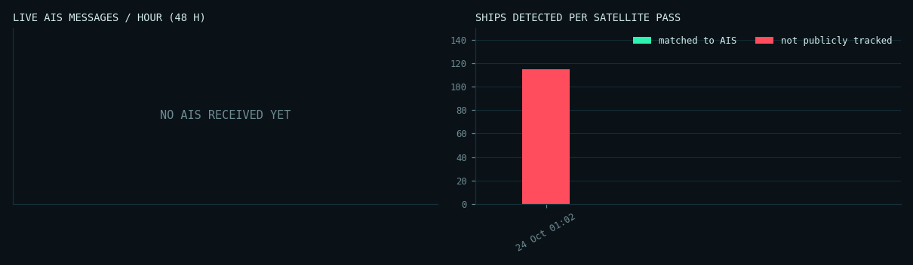

SECTOR // MUMBAI · 18.80–19.10°N · 72.55–72.95°E
Mumbai coast and harbour, India
The project's target area. Sentinel-1 images it about once every 12 days, and free AIS comes only from coastal receivers, so many unmatched ships here are simply out of receiver range.
Live AIS feed
NO SIGNAL
no message received yet
Ships broadcasting · 30 min
0
Matched · latest pass
0
Not tracked · high confidence
0
Not tracked · low confidence
115
Live AIS coverage. The free aisstream network has delivered no messages for this area so far: it relies on volunteer coastal receivers, and none is reporting here. This is the free-data blind spot the project measures.
Tactical map
Showing pass s1d-iw-grd-vh-20261024t010238-20261024t0 · 2026-10-24 01:02 UTC
matched to AISnot tracked · high confidence
not tracked · low confidencelive AIS position
Pass log
| pass (UTC) | ships | matched | not tracked | low conf. | match rate | AIS msgs |
|---|---|---|---|---|---|---|
| 2026-10-24 01:02 UTC | 115 | 0 | 0 | 115 | 0% | 0 |
Telemetry

Feed gaps in the last 24 h: 15 (1199 min) · AIS messages in the last hour: 0
Recent Sentinel-1 acquisitions
- 2026-10-24 01:02 UTC